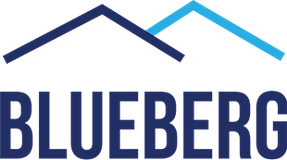
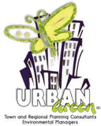
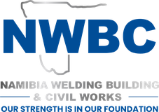

Market Research & Consumer Insights
Market sizing, customer needs and consumer insights.
Use it before entering a market, launching a product or changing a price.
Details on market research and consumer insightsiResearch Namibia designs studies, collects survey data in the field and reports what the findings mean for your decision. We run market research, baseline surveys, evaluations and feasibility work for corporates, development partners and government across Namibia.



Four service lines for corporates, NGOs and development partners, government and public entities, and investors. Each runs as a full study, as fieldwork only, or as analysis only on data you already hold.
Market sizing, customer needs and consumer insights.
Use it before entering a market, launching a product or changing a price.
Details on market research and consumer insightsBaseline, midline and endline studies, impact evaluations, needs assessments and household surveys.
Use it to set a starting position or report against a results framework.
Details on socio-economic and development researchDemand, viability and risk assessment for projects and investments.
Use it before capital is committed or a funding application goes in.
Details on feasibility studies and project assessmentsData cleaning, analysis in SPSS, R and Excel, and recurring reporting.
Use it when records exist but are not yet used to manage performance.
Details on business intelligence and data analyticsClient names are withheld. Scope and method are shown as delivered.
Fieldwork runs in all 14 regions, urban and rural, in eight languages. Sampling and instruments are planned for the regions and populations involved. Design and reporting follow recognised research practice, so results hold up with boards, funders and auditors.
Each report opens with the findings and what they mean for your decision, then options, priorities and next steps. Detail and data sit behind that, in a form your team can reuse.
At least 10% of interviews are independently back-checked, and GPS and timestamps are audited. Consent and confidentiality apply to every respondent. Timelines and budgets are agreed upfront and reported against weekly.
A fixed sequence with sign-off points. You approve the design before fieldwork starts and see the data before the report is final.
Agree the decision the study must inform, the questions, budget and timeline.
Method, sampling frame, sample size and instruments. Shared for client approval.
Enumerator training, pilot, then data collection with daily field reporting.
Independent back-checks on at least 10% of interviews, GPS and timestamp audits, and logic checks on incoming data.
Findings, implications and recommendations. Clean dataset and codebook on request.
Data collection is managed in-house by our Data Collection Lead. Enumerators are trained and piloted for each study and supervised in the field, with progress reported to the client daily.
Languages: English, Oshiwambo, Afrikaans, Otjiherero, Khoekhoegowab, Rukwangali, Thimbukushu and Silozi.
We work with organisations across the public and private sectors, and with development partners, in Namibia.
Respondents give their time and their information. We protect both, and we document how.
A core team in Windhoek, supported by three field supervisors, trained enumerators and specialist associates. See the services we deliver.
Managing Consultant – Research & Strategy
Johannes Kaongo Ndakukamo is the Managing Consultant and founder of iResearch Namibia, bringing extensive experience in research, analytics, and strategic advisory across Namibia's private sector, public sector, and development landscape.
He holds an Honours Degree in Business Administration (Strategic Marketing) and is currently pursuing his MBA at Wits Business School.
He has led projects in market research, feasibility studies, business intelligence, SME advisory, and strategic planning, combining analytical depth with local insight to support evidence-based decisions and sustainable growth.
Data Collection Lead
Bas has more than 20 years of international experience in research management, programme leadership and partnerships across Africa and Europe. He is Projects Coordinator for Research, Innovation and Partnerships at the Namibia University of Science and Technology, and previously managed donor-funded research programmes at the Antares Foundation and PharmAccess Foundation Namibia. He holds a PhD from the University of Johannesburg and a Master's in Cultural Anthropology from Utrecht University.
Data Analyst
Philip T. Kantewa is a Data Analyst with expertise in systems development and web technologies, bringing analytical expertise and technical precision to projects across Namibia's business and technology landscape. He graduated from the Namibia University of Science and Technology, honing skills in mathematics, data analysis, and applied computing.
His expertise spans data analytics, systems troubleshooting, and strategic insights, aligning analytical outputs to client goals. Philip supports organisations in making informed decisions, improving efficiency, and strengthening their digital presence.
Procurement teams, funders and boards need to see how a study will be run before they approve it. Each proposal gives them that.
Send us the question you need answered, the population, and your timeline. We reply with a proposed approach and budget.
The fastest route to a proposal is a short email with the five points below. We reply with a proposed approach, timeline and budget.